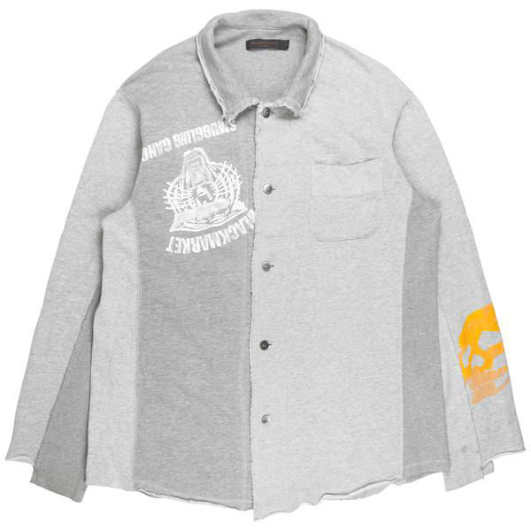
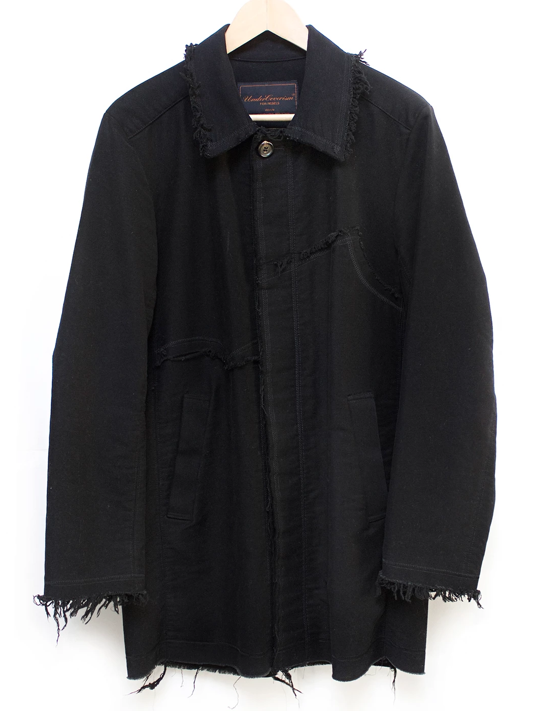

2D Clothing
Drawing from childhood inspiration, Takahashi based this collection off of traditional Japanese Paper Dolls. Models on the runway had hair and makeup done to simulate a cartoonish look. Invitations to the Paris catwalk were also paper dolls with the show information on them. Garments from this collection carry a very accessible feel, with slight hints of traditional Undercover motifs (Silver League, “Geometric Cargo Trouser.”).
AW03 Hybrid Docking Shirt from Silver League.
As with many other early Undercover pieces, Takahashi would continue to repeat garment-making techniques in later season. This overshirt appears to be made out of several other pieces Frankenstein-ed together into one item. The paper doll inspiration can be clearly seen here, as the panels create the illusion of a 2-D item that would be seen on a paper doll.
AW03 Distressed Long Coat from PISSCHILD on Grailed.
At first glance, this garment appears to be a traditional overcoat. But upon further inspection, the details of the coat bring it to life and add character. The raw edges at the wrists, waist, and collar give this formal coat an extra element of mystery. The hidden closure buttons running down the coat also display Takahashi’s extreme attention to detail and appreciation for functionality.
Back to Top